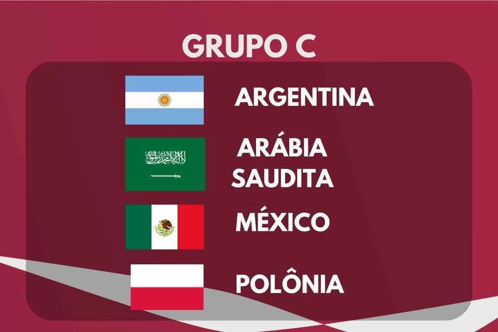

DESCRIÇÃO DO GRUPO
O Grupo C da Copa do Mundo FIFA 2022 terá sua primeira fase de jogos de 22 a 30 de novembro de 2022.
O grupo é formado por Argentina, Arábia Saudita, México e Polônia.
As duas melhores equipes avançam para as oitavas de final.
|  |
Encontros anteriores em Copas do Mundo |
| Argentina x Arábia Saudita |
Nenhum encontro |
| México x Polônia |
1978, fase de grupos:
Polônia 3-1 México |
| Argentina x México |
2006, Oitavas de final:
Argentina 2-1 México
2010, Oitavas de final:
Argentina 3-1 México |
| Polônia x Arábia Saudita |
Nenhum encontro |
| Polônia x Argentina |
1974, fase de grupos:
Polônia 3-2 Argentina
1978, fase de grupo:
Argentina 2-0 Polônia |
| Arábia Saudita x México |
Nenhum encontro |
EQUIPES
| Equipe |
Inscrição |
Confederação |
Método de Qualificação |
Data de Qualificação |
Aparições em Copas do Mundo |
Última Participação |
Melhor Resultado |
Ranking FIFA (Março/2022) |
| Argentina |
C1
(Cabeça-de-chave) |
CONMEBOL |
1º colocado na fase única |
16 de novembro de 2021 |
18 |
2018 |
Campeão (1978 e 1986) |
4º |
| Arábia Saudita |
C2 |
AFC |
Vencedor do grupo B |
24 de março de 2022 |
6 |
2018 |
Oitavas de final (1994) |
49º |
| México |
C3 |
CONCACAF |
2º colocado da terceira fase |
30 de março de 2022 |
16 |
2018 |
Quartas de final (1970, 1986) |
9º |
| Polônia |
C4 |
UEFA |
Vencedor da repescagem B |
29 de março de 2022 |
9 |
2018 |
Terceiro lugar (1974 e 1982) |
26º |
PARTIDAS
Todas as partidas seguem o fuso horário UTC+3 (Horário de Moscow).
Argentina x Arábia Saudita
| Data/Hora |
Local |
| 22 de Novembro às 13:00 |
Estádio Nacional de Lusail, Lusail |
México x Polônia
| Data/Hora |
Local |
| 22 de Novembro às 19:00 |
Estádio 947 (Ras Abu Aboud), Doha |
Polônia x Arábia Saudita
| Data/Hora |
Local |
| 26 de Novembro às 16:00 |
Estádio da Cidade da Educação, Al Rayyan |
Argentina x México
| Data/Hora |
Local |
| 26 de Novembro às 22:00 |
Estádio Nacional de Lusail, Lusail |
Polônia x Argentina
| Data/Hora |
Local |
| 30 de Novembro às 22:00 |
Estádio 947 (Ras Abu Aboud), Doha |
Arábia Saudita x México
| Data/Hora |
Local |
| 30 de Novembro às 22:00 |
Estádio Nacional de Lusail, Lusail |
CLASSIFICAÇÃO
| 1º Colocado |
2º Colocado |
| Enfrenta o 2º Colocado do Grupo D, nas Oitavas de Final |
Enfrenta o 1º Colocado do Grupo D, nas Oitavas de Final |